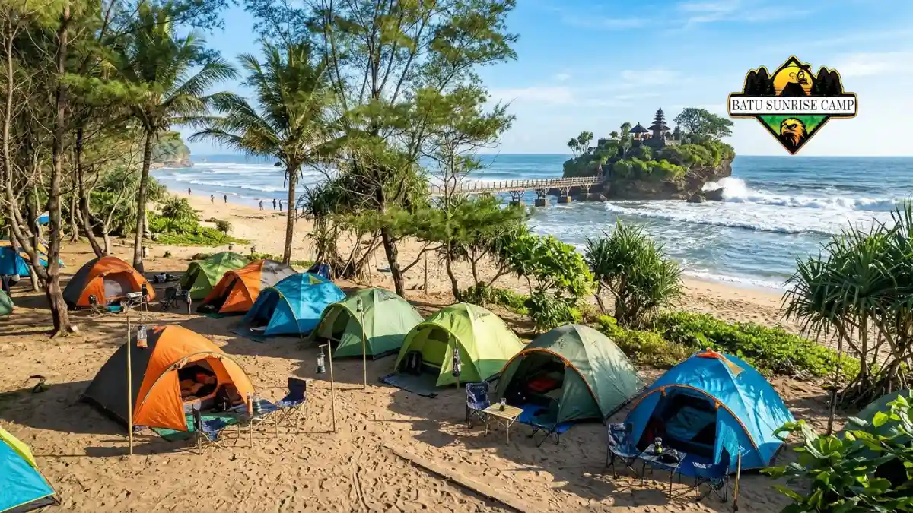

Biaya camping di pantai Malang Selatan umumnya mencakup tiket masuk, tarif menginap, parkir, dan sewa tenda, dengan kisaran yang perlu dikonfirmasi langsung ke pengelola.
- Komponen biaya utama adalah tiket masuk, tarif camping, parkir, dan sewa tenda atau paket.
- Laporan media menyebut tiket masuk berkisar Rp5.000 hingga Rp20.000 dan tarif camping Rp10.000 hingga Rp25.000 per malam.
- Paket tenda siap pakai pada event Balekambang Light Party Juni 2025 dibanderol Rp250.000 per tenda untuk empat orang, di luar tiket masuk dan parkir.
- Membawa tenda sendiri, berangkat pada hari kerja, dan memanfaatkan tiket terusan dapat menekan pengeluaran.
Apa saja komponen biaya camping di pantai Malang Selatan?
Komponen biaya camping di pantai Malang Selatan meliputi tiket masuk, tarif bermalam, parkir kendaraan, sewa tenda atau paket, serta pengeluaran makanan dan bahan bakar.
Tiket masuk biasanya dikenakan per orang dan menjadi biaya wajib di pos masuk. Tarif camping atau bermalam dapat dihitung per orang atau per tenda, tergantung kebijakan pengelola. Karena itu, tanyakan sistem hitungnya sebelum membayar.
Parkir dihitung terpisah, dan nominalnya berbeda menurut jenis kendaraan. Sewa tenda atau paket camping hanya diperlukan bila Anda tidak membawa perlengkapan sendiri.
Biaya tidak langsung, seperti makanan, air minum, dan bahan bakar kendaraan, sering menjadi bagian terbesar dari anggaran total, terutama untuk perjalanan jauh dari Surabaya atau luar kota.
Berapa kisaran tiket masuk dan tarif camping di pantai populer?
Laporan media menyebut tiket masuk pantai Malang Selatan berkisar Rp5.000 hingga Rp20.000 per orang, dan tarif camping Rp10.000 hingga Rp25.000 per malam.
Angka berikut berasal dari laporan media yang terbit pada waktu berbeda, sehingga nominalnya dapat sudah berubah. Gunakan tabel sebagai gambaran, bukan harga pasti.
| Pantai | Tiket Masuk yang Dilaporkan | Tarif Camping yang Dilaporkan | Catatan |
|---|---|---|---|
| Balekambang | Rp5.000 hingga Rp20.000 per orang, tergantung laporan | Rp20.000 hingga Rp25.000 per malam | Tersedia sewa tenda dan kano menurut laporan media |
| Goa Cina | Sekitar Rp10.000 per orang | Tergantung pengelola | Masuk area gua dikenai biaya tambahan sekitar Rp5.000 menurut laporan 2022 |
| Tiga Warna | Reservasi sekitar Rp100.000 per rombongan | Cek aturan menginap | Maksimal 10 orang per kelompok menurut laporan media |
Perbedaan angka antarsumber menunjukkan bahwa tarif berubah menurut waktu dan kebijakan pengelola.
Berapa biaya sewa tenda atau paket camping di pantai Malang Selatan?
Paket tenda siap pakai pada event Balekambang Light Party Juni 2025 dibanderol Rp250.000 per tenda untuk empat orang, belum termasuk tiket masuk dan parkir kendaraan.
Menurut laporan JatimTIMES tentang paket Balekambang Light Party, paket tersebut mencakup tenda berkapasitas empat orang yang sudah terpasang, matras dan kasur tenda, lampu tenda, dua lampion, voucher flying fox, es jeruk, serta gelang fosfor. Paket ini adalah contoh tarif event, bukan tarif harian biasa, sehingga hanya cocok sebagai pembanding.
Pada hari biasa, sewa tenda dapat lebih murah atau lebih mahal, tergantung pengelola, musim, dan kelengkapan perlengkapan.
Jika Anda membawa tenda sendiri, biaya ini bisa dihilangkan sepenuhnya. Pertimbangkan sewa hanya bila Anda belum memiliki tenda tahan angin yang cocok untuk pasir.

Area camping Pantai Balekambang yang menyediakan paket tenda siap pakai dan area untuk mendirikan tenda sendiri.
Bagaimana cara menghemat biaya camping di pantai Malang Selatan?
Cara menghemat biaya camping pantai adalah membawa tenda sendiri, berangkat pada hari kerja, patungan kendaraan, memasak sendiri, dan memanfaatkan tiket terusan bila tersedia.
Membawa tenda dan kantong tidur sendiri menghilangkan biaya sewa. Patungan bensin dan parkir menekan biaya per orang, terutama untuk rombongan dalam satu mobil.
Memasak sendiri biasanya lebih murah dibanding membeli makanan di lokasi, asalkan Anda membawa kompor kecil dan air bersih.
Tiket terusan juga membantu. Pengelola Pantai 3 in 1 Bantur menyampaikan pada 24 Maret 2026 bahwa tiket tidak naik pada periode Lebaran dan bahwa satu tiket masuk bisa dipakai untuk menikmati tiga pantai, menurut laporan TIMES Indonesia tentang Pantai 3 in 1 Bantur.
Hemat tidak berarti mengurangi keselamatan. Jangan mengorbankan tenda yang layak atau penerangan demi menekan biaya. Baca panduan keselamatan camping di pantai Malang Selatan untuk standar minimal yang perlu dipenuhi.
Apakah tarif camping pantai bisa naik saat libur panjang?
Tarif camping pantai dapat berubah saat libur panjang, tetapi beberapa pengelola menyatakan tidak menaikkan tiket, sehingga konfirmasi ke pengelola tetap diperlukan sebelum berangkat.
Pada Lebaran 2026, pengelola Pantai 3 in 1 Bantur menyatakan harga tiket tetap seperti biasa. Pernyataan ini bukan jaminan untuk pantai lain, karena setiap pengelola memiliki kebijakan sendiri.
Biaya tidak langsung seperti parkir, makanan, dan penginapan di sekitar pantai juga dapat naik saat permintaan tinggi.
Untuk mengurangi kejutan, sisihkan dana cadangan sekitar sepuluh persen dari anggaran Anda. Hindari mengandalkan satu sumber informasi. Bandingkan informasi dari pengelola, kantor wisata, dan laporan media terbaru.
Bagaimana cara memastikan tarif terbaru sebelum berangkat?
Cara memastikan tarif terbaru adalah menghubungi pengelola pantai atau kantor wisata setempat, bertanya sistem hitung tarif, dan menyiapkan uang tunai pecahan kecil.
Tanyakan empat hal: tiket masuk per orang, tarif camping per orang atau per tenda, biaya parkir, dan jam operasional pos. Catat jawabannya dan minta bukti pembayaran saat membayar.
Siapkan uang tunai karena tidak semua lokasi menerima pembayaran nontunai. Jika Anda berangkat lintas daerah, hitung pula biaya perjalanan menurut panduan rute dan akses pantai Malang Selatan untuk camping agar anggaran lengkap dari awal.
Kesimpulan
Anggarkan tiket masuk, tarif camping, parkir, sewa tenda bila perlu, makanan, dan bahan bakar. Konfirmasi tarif ke pengelola, bawa tenda sendiri untuk menekan biaya, dan sisakan dana cadangan. Pilih pantai sesuai kebutuhan lewat artikel lokasi pantai Malang Selatan untuk camping.

Pertanyaan yang Sering Diajukan (FAQ)
Biaya per orang umumnya terdiri dari tiket masuk sekitar Rp5.000 hingga Rp20.000 dan tarif camping sekitar Rp10.000 hingga Rp25.000 per malam menurut laporan media, belum termasuk parkir, makanan, dan bensin. Angka dapat berubah, jadi konfirmasi ke pengelola.
Umumnya tidak. Paket tenda pada event Balekambang Light Party Juni 2025 dinyatakan belum termasuk tiket masuk dan parkir kendaraan. Tanyakan kepada penyedia sewa apakah tiket, parkir, dan perlengkapan tambahan sudah masuk harga.
Parkir umumnya dikenakan terpisah dari tiket masuk, dan nominalnya bergantung pada jenis kendaraan serta kebijakan pengelola. Tanyakan tarif parkir di pos masuk dan simpan bukti pembayaran untuk menghindari kesalahpahaman.